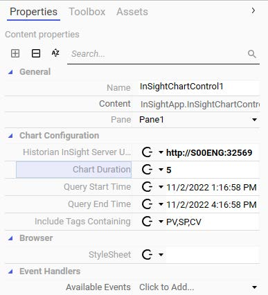
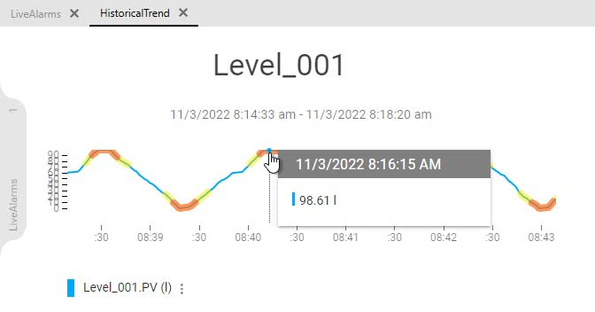
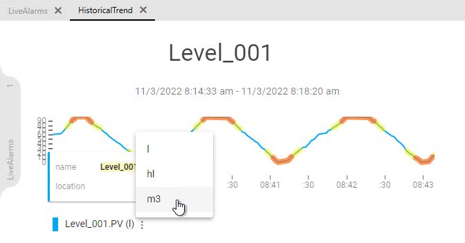
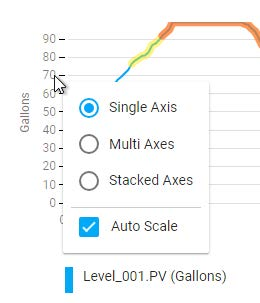
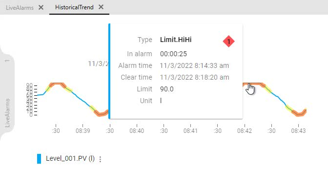
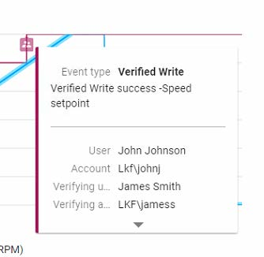
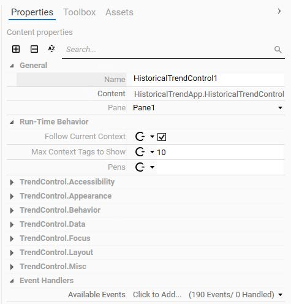
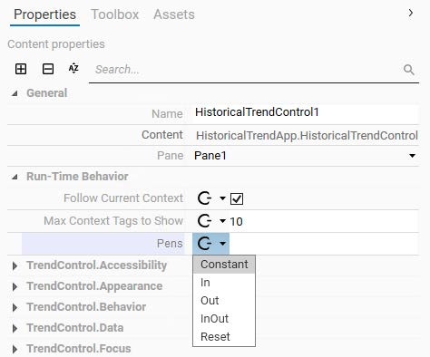
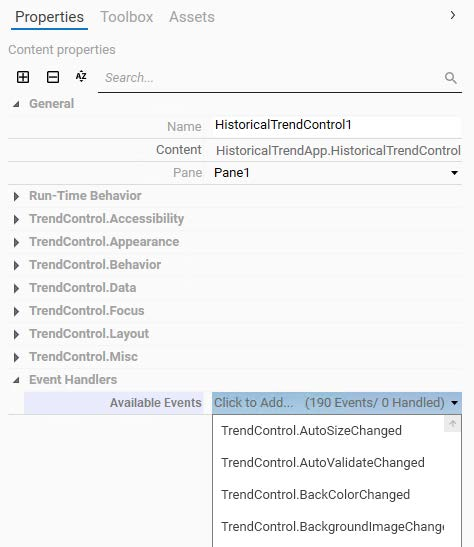
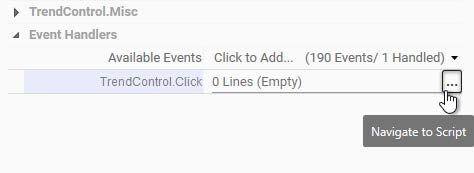

AVEVA™ Operations Management Interface 2023 — Module 10: Trends
Pages 617–624 (Section 3 – Historical Trending)
Historian and Historian Client provide client applications that can access the Historian database. These clients are the Historian Client Web and Historian Client Trend applications, each designed for different use cases when working with historical data.
Historian Client Web helps to retrieve historical data through the web browser and present data in different formats, such as trends, tables, and more. On a remote client node, you can access the Historian database through the web client using a web browser. With Historian Client Web, you can present your data in a chart, work with data using dashboards, save and share content, and view and reuse content. You can search for specific saved content, tags, or keywords and view the results in a chart. You can choose the chart type, add or remove tags from the chart, and fine-tune how content is displayed. You can save, download, and share the content. You can also embed the content in a web page or other HTML-based document.
Historian Client Trend also helps to retrieve historical data and present data in trend format. You can access the Historian database on a remote client node using the Trend client application. With Historian Client Trend, you can query tags from a Historian database and plot them on different types of charts and manipulate the charts in different ways, including panning, zooming, and scaling. You can also customize the trend by configuring available options.
InSightApp is an out-of-the-box OMI App for running an active Insight browser session within a pane of a running ViewApp. The InSightApp provides a visualization of operational data by retrieving information from the Historian. The InSightApp includes a search engine for retrieving relevant information from tags that include defined keywords.
InSightApp global settings are configured in the InSightApp Global Editor. You can open the InSightApp Global Editor by double-clicking the InSightApp from the Graphics tab. From the editor, you can configure the Historian InSight server URL, the start date and time, the end date and time, the chart duration, and keywords defined for searching tags. You can also use the Test Connection button to verify connection to the specified InSight server.
| Setting | Description | Example Value |
|---|---|---|
| Historian InSight Server URL | URL of the InSight server | http://S00ENG:32569 |
| Start Date/Time | Beginning of the query range | 12/20/2022 8:30 AM |
| End Date/Time | End of the query range | 12/20/2022 11:30 AM |
| Chart Duration | Time window in minutes | 180 |
| Include Tags Containing | Keyword filter for tag search | PV, SP, CV |
To use the InSightApp in a ViewApp, it must be assigned to a layout pane in the Layout Editor or ViewApp Editor. Once the InSightApp is assigned to a pane, you can customize the properties that include Historian InSight server URL, query start time, query end time, chart duration, and keywords defined for searching tags. You can also create an event handler script by selecting an event in the available events list of the control.

A logged in user must be an authorized Historian user to view a chart displayed by the InSightApp in a running ViewApp. InSightApp uses the single sign-on service of the ViewApp. To use the InSightApp, the security authentication mode for the Galaxy must be configured as OS Group or OS User based. The Galaxy security authentication mode is not supported.
InSightApp runs in the context of the logged on ViewApp user. A valid InSightApp user must be a member of one of the following groups:
aaAdministratorsaaPowerUsersaaUsersIn a running ViewApp, the InSightApp searches for keywords defined in the InSightApp properties, based on the asset of the current navigation. If the current asset has attributes that contain the search keywords, the InSightApp will retrieve historical data for the asset. The historical data will be presented as a trend chart.
The trend chart may have one or more pens, based on the number of attributes in the asset that contain the search keywords. In runtime, the trend chart includes the current asset name, trend pens, and an interactive legend. When you hover your mouse over the chart, a cursor appears with values for all tags. You can move the cursor along the x-axis to see values for specific points in time.


You can click the ellipsis button in the legend at the bottom to display a menu of units of measure. Selecting a different unit of measure converts the data in the display to the new unit of measure. You can hover your mouse over the x-axis in the chart to show a floating toolbar, which provides time- and zoom-related tools.
When the associated tags in the InSightApp have alarms and events, the trend displays with additional indicators:



Another out-of-the-box OMI App is the HistoricalTrendApp, which is based on the Historian Client Trend application. To use the HistoricalTrendApp, you must assign it to a layout pane in the Layout Editor or ViewApp Editor. At runtime, you can configure the server connections, add tags from a Historian database, and plot them on a trend chart. You can also manipulate the display for panning, zooming, and scaling. Other configurations are available for customizing the trend chart and a selected pen.
You can use the HistoricalTrendApp to display different types of charts, which are a regular trend curve and an XY scatter plot.
The HistoricalTrendApp provides a set of design-time properties that enable or disable visual and functional components of the HistoricalTrendControl during runtime. Once added to a layout pane, the HistoricalTrendControl properties show on the Properties tab in the Layout Editor. You can use the search feature on the Properties tab to search for a property by name.
| Property Category | Description |
|---|---|
| General | Name of the control, the control as content, and the pane in which it is placed |
| Run-Time Behavior | Follow Current Context (show trend for current asset tags), Max Context Tags to Show, Pens property (add specific tags) |
| .NET Trend Control | Properties from the underlying .NET trend control, identified by the TrendControl prefix (e.g., TrendControl.Accessibility, TrendControl.Appearance) |

The HistoricalTrendApp includes runtime properties that are exposed as configurable properties, which determine the visual aspects or functional behaviors of the HistoricalTrendApp during runtime. Most of the properties include a list of binding options to configure a static or dynamic value based on the type of binding between the property and its associated reference.
You can select a binding option from the list and then configure the values by specifying a reference, such as a reference to an attribute defined in a custom ViewApp namespace or a public custom property of a symbol assigned in the same layout. With a dynamic binding option, these properties can be changed dynamically based on the reference values at runtime.

The Event Handlers category on the Properties tab lists all available events for the control, and you can create an event handler script by selecting an event from the list. The underlying control of the HistoricalTrendApp includes a set of public events that can be used for creating event handler scripts. These events are identified by the TrendControl prefix in their names that appear in the list of the available events.

You can select a public event of the control from the list to add an event handler script. Then, you can navigate to the Script page to edit the script by selecting the ellipsis to the right of the added script. More information about layout scripts is provided in Module 13.

Historian Client Web (browser-based, for charts/dashboards) and Historian Client Trend (trend-focused, for panning/zooming/scaling).
The InSightApp is an out-of-the-box OMI App that runs an active Insight browser session within a ViewApp pane. At runtime, it searches for keywords defined in its properties based on the current navigation asset, retrieves matching historical data from Historian, and displays it as a trend chart with interactive pens and legends.
A valid InSightApp user must be a member of one of: aaAdministrators, aaPowerUsers, or aaUsers. The Galaxy must use OS Group or OS User based authentication.
The Run-Time Behavior category contains the Follow Current Context property, which determines if the control shows trend data for tags belonging to the current navigation context.
Yellow highlights indicate Severity 2 alarms and red highlights indicate Severity 1 alarms. Clicking on a highlighted area displays additional alarm information.